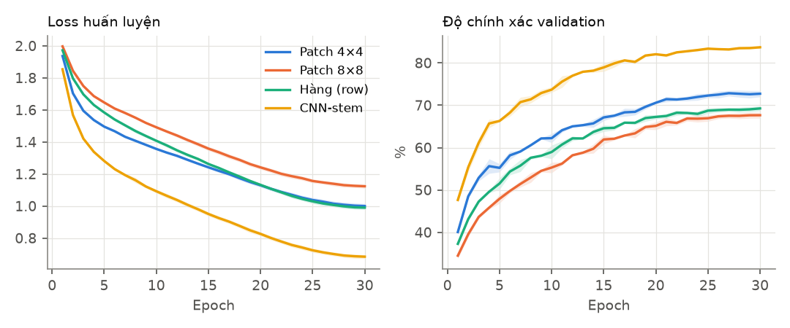
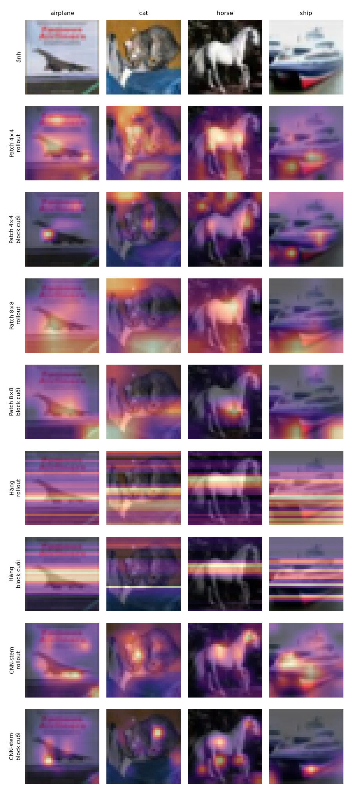
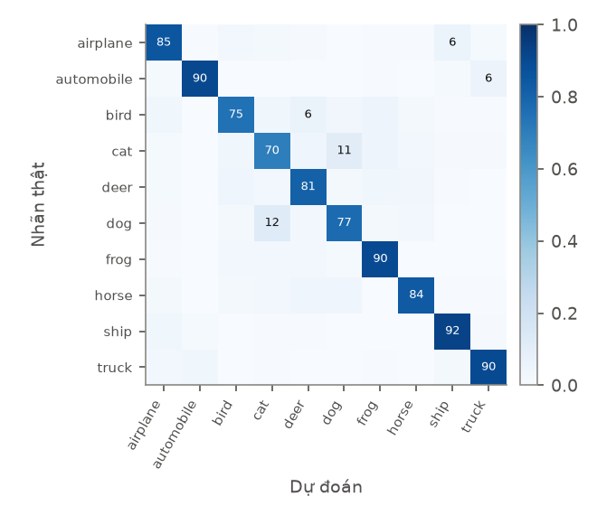

Cơ chế Self-Attention cho phép các vector đặc trưng trong chuỗi tự tương tác và tính trọng số quan hệ theo ngữ cảnh. Với mỗi token ta tính Query ($Q$), Key ($K$) và Value ($V$).
MSAScratch chỉ dùng Linear, einsum, softmax và
reshape; MSATorch bọc nn.MultiheadAttention. Cả hai nhận đúng cùng bộ
trọng số (Xavier-uniform từ một generator theo seed, bias bằng 0), và phần còn lại của mô hình cũng được khởi
tạo lại từ một seed cố định, nên mọi khác biệt kết quả chỉ đến từ cách hiện thực. Bộ kiểm thử đơn vị xác nhận
đầu ra, ma trận chú ý (mỗi hàng tổng bằng 1) và gradient trùng nhau trong sai số $10^{-9}$ ở độ chính xác kép.
Khi không cần ma trận chú ý, PyTorch có thể dùng nhân tính toán gộp (fused), nên so sánh thời gian chỉ phản ánh
cách hiện thực.
Để đưa ảnh vào Transformer, ảnh cần được chuyển thành chuỗi token 1D. Với ảnh $32\times32$, nhóm so sánh 4
chiến lược (mỗi mô hình thêm một token [CLS] học được ở đầu chuỗi, đầu phân loại chỉ đọc token
này):
Các biến thể khác trong đề (patch chồng lấn, token theo kênh, token theo từng pixel với $N=1024$) không được đưa vào vì chúng không trả lời một câu hỏi mới ở quy mô này; ảnh hưởng của $N$ đến chi phí đã thể hiện qua $N=16, 32, 64$.
| Thành phần | Giá trị |
|---|---|
| Dữ liệu | CIFAR-10: 45 000 train / 5 000 validation (500 ảnh/lớp, seed 42) / 10 000 test chính thức |
| Mô hình | Encoder pre-norm 4 khối, $D=128$, 4 head, FFN 512, dropout 0.1, huấn luyện từ đầu |
| Tối ưu | AdamW, lr đỉnh 1e-3, weight decay 0.05, warmup 5% + cosine, cắt gradient 1.0, fp16 |
| Huấn luyện | 30 epoch, batch 128, random crop (pad 4) + lật ngang, label smoothing 0.1 |
| Báo cáo | Epoch cuối (không chọn checkpoint), test dùng một lần, trung bình ± std trên 3 seed |
Hai bản MSA bắt đầu từ cùng trọng số, cùng thứ tự dữ liệu theo seed. Δ là hiệu trung bình theo cặp seed (tự viết − PyTorch), tính bằng điểm phần trăm.
| Cơ chế Tokenize | Số tham số | Test acc. – tự viết (%) | Test acc. – PyTorch (%) | Δ | Giây/epoch – tự viết | Giây/epoch – PyTorch |
|---|---|---|---|---|---|---|
| Patch 4×4 + CLS | [Sẽ cập nhật] | [Sẽ cập nhật] | [Sẽ cập nhật] | […] | […] | […] |
| Patch 8×8 + CLS | [Sẽ cập nhật] | [Sẽ cập nhật] | [Sẽ cập nhật] | […] | […] | […] |
| Row + CLS | [Sẽ cập nhật] | [Sẽ cập nhật] | [Sẽ cập nhật] | […] | […] | […] |
| CNN-stem + CLS | [Sẽ cập nhật] | [Sẽ cập nhật] | [Sẽ cập nhật] | […] | […] | […] |
MSA tự viết, 3 seed. $N{+}1$ gồm token [CLS]; thời gian là trung vị giây/epoch (huấn luyện, không
gồm validation).
| Cơ chế Tokenization | Số token (N+1) | Số head (h) | Số tham số | Val acc. (%) | Test acc. (%) | Giây/epoch | Bộ nhớ GPU (MB) |
|---|---|---|---|---|---|---|---|
| Patch 4×4 + CLS | 64 + 1 | 4 | [Đang cập nhật...] | […] | […] | […] | […] |
| Patch 8×8 + CLS | 16 + 1 | 4 | [Đang cập nhật...] | […] | […] | […] | […] |
| Row + CLS | 32 + 1 | 4 | [Đang cập nhật...] | […] | […] | […] | […] |
| CNN-stem + CLS | 64 + 1 | 4 | [Đang cập nhật...] | […] | […] | […] | […] |

| Tokenizer | Có positional embedding – test (%) | Không có – test (%) | Δ |
|---|---|---|---|
| Patch 4×4 + CLS | […] | […] | […] |
| Row + CLS | […] | […] | […] |
Với mỗi tokenizer, ta vẽ attention rollout (nhân các ma trận chú ý trung bình theo head, đã cộng
residual, qua các khối) từ [CLS] đến token đầu vào, và chú ý của [CLS] ở khối cuối.
Đây là công cụ gợi ý để kiểm tra mô hình có tập trung vào vật thể hay không, không phải bằng chứng về nguyên
nhân quyết định.

[CLS] cho 4 ảnh test (máy bay, mèo, ngựa, tàu).
(Hình sẽ được thay khi có kết quả.)

Mã nguồn, cấu hình, seed và tệp kết quả JSON nằm trong thư mục E2/. Kiểm thử:
python -m unittest discover -s E2/tests; đo nhanh thời gian trên máy:
python -m e2lib.bench;
chạy toàn bộ: python -m e2lib.plan; bảng và hình: python -m e2lib.analyze. Chi tiết
trong
E2/README.md.
Công cụ AI (Claude) hỗ trợ viết và rà soát mã, bộ kiểm thử và bản nháp báo cáo. Nhóm đã đọc, kiểm tra và chịu trách nhiệm về toàn bộ nội dung.